Kirchi
Simulador de circuitos gratis, sin conexión, en español y en inglés.
Dibujas el esquema en una rejilla, lo armas en una protoboard, pulsas F5 y lo ves funcionar: el voltaje de cada cable, la corriente de cada rama y un osciloscopio de cuatro canales. Hecho para estudiantes de ingeniería.
Versión · Gratis · Sin cuenta y sin enviar datos
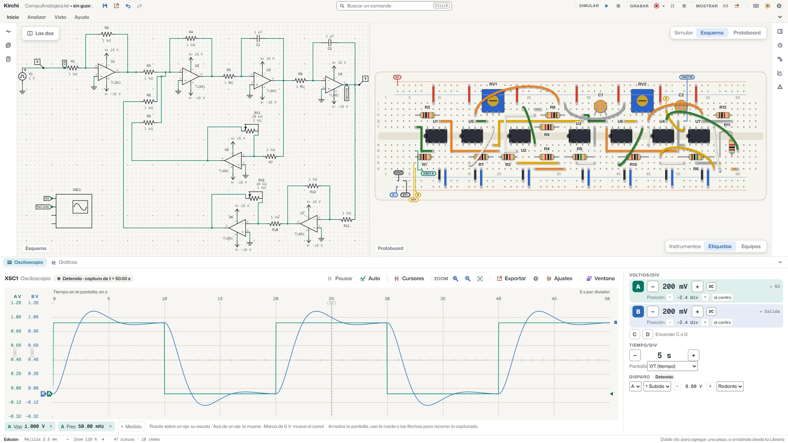
Desde la versión 3.0
Arma el circuito en una protoboard, junto a su esquema
El esquema es el plano y la protoboard es lo que armas. Cada vista trabaja con las mismas piezas y se simula por separado: eliges con cuál.
Generar protoboard arma en la placa lo que tiene el esquema. Un resumen previo dice qué se agrega, qué se quita y qué se recablea, y un solo deshacer lo revierte. Generar esquema hace el camino contrario, y lo que falta o difiere se marca y se lista en Avisos.
Hay placas de 830, 400 y 170 puntos, piezas con su aspecto real y resistencias con sus bandas de color. Con Medir se clavan las puntas de un multímetro o un osciloscopio en la placa.
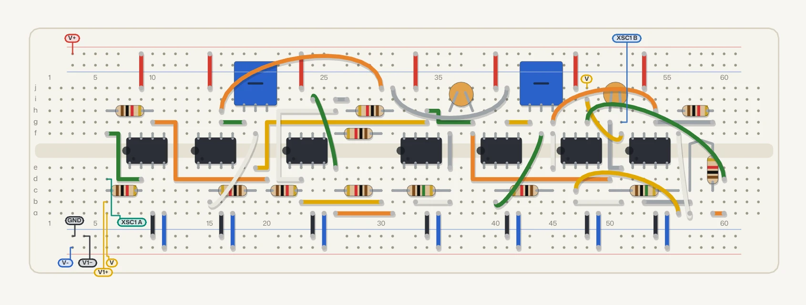
- Cada etapa juntaLas piezas de una etapa quedan alrededor de su integrado, con aire entre etapas.
- Un puente por pin de alimentaciónRecto y corto, del pin de alimentación a su riel.
- Nada en los pines sin usoEl ajuste de offset, NC y la otra unidad del chip quedan vacíos.
- El mismo armado cada vezEl mismo circuito da la misma placa, aunque borres el esquema y lo vuelvas a pegar.
Desde la versión 2.2
Abre tus circuitos de Proteus, LTspice, Falstad, SPICE y KiCad
Abrir (Ctrl+O) o arrastrar el archivo a la ventana basta. Kirchi reconoce el programa de origen por el contenido, abre el circuito como documento nuevo y deja el original intacto.
Al terminar muestra un informe de lo convertido: lo que se aproximó con la pieza más cercana, lo que no tiene equivalencia y los análisis que se convirtieron. Se conservan las sondas, los generadores, los multímetros y osciloscopios virtuales, y los análisis de punto de operación, barrido de CD, transitorio, CA y Fourier.
Desde la versión 3.1
Del esquema a una placa, con KiCad y JLCPCB
Archivo › Exportar para fabricar revisa la huella de cada pieza y escribe un proyecto de KiCad con su esquema, una placa vacía y la lista de materiales para JLCPCB.
La placa se dibuja en KiCad. Una guía dentro de Kirchi se queda abierta a un lado en dieciséis pasos, con un dibujo cada uno: instalar KiCad, revisar cada pieza y exportar desde Kirchi, traer las piezas con F8, dibujar el borde, trazar las pistas, revisar las reglas, generar los Gerber y las perforaciones, y antes de pagar imprimir la placa a escala 1:1 para probar las piezas reales encima.
Un circuito en marcha, tal como se ve
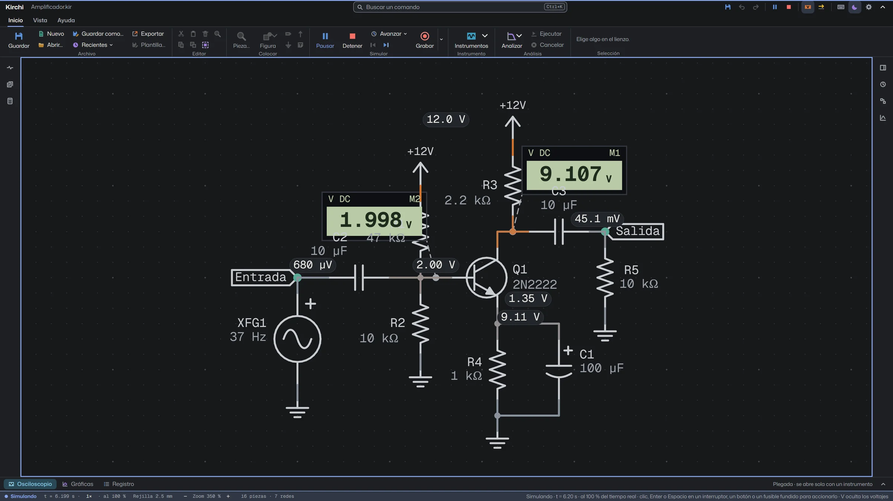
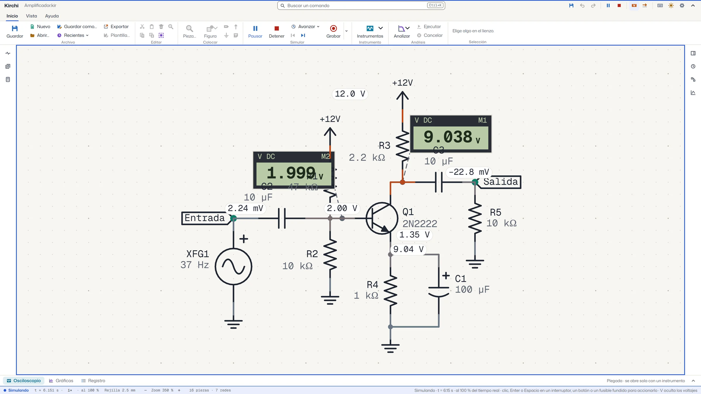
Los cables se pintan según su voltaje, la corriente se mueve por cada rama, los LED encienden y las piezas se queman cuando pasan su máximo. Ocho velocidades, de ×10 a ×0.001, y perillas e interruptores que se accionan mientras corre.
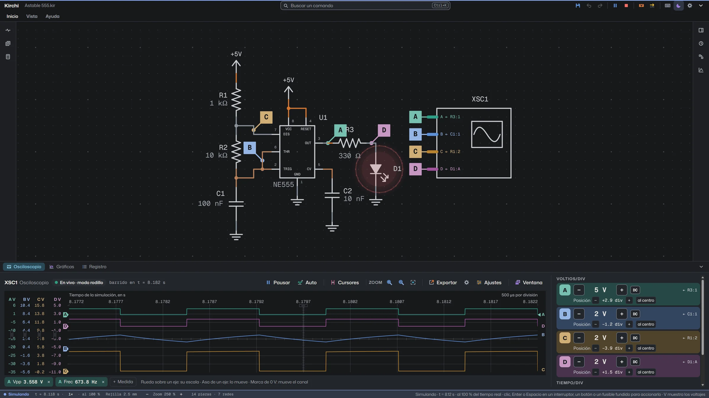
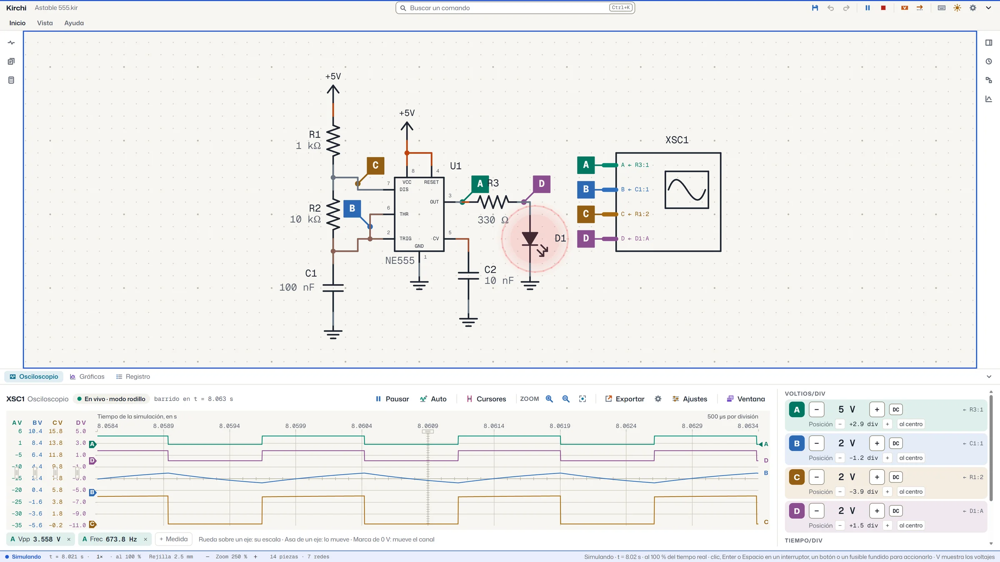
Osciloscopio de cuatro canales con disparo, cursores, medidas automáticas y modo X-Y. Multímetro, generador de funciones, fuente variable y medidores rápidos sobre cualquier cable.
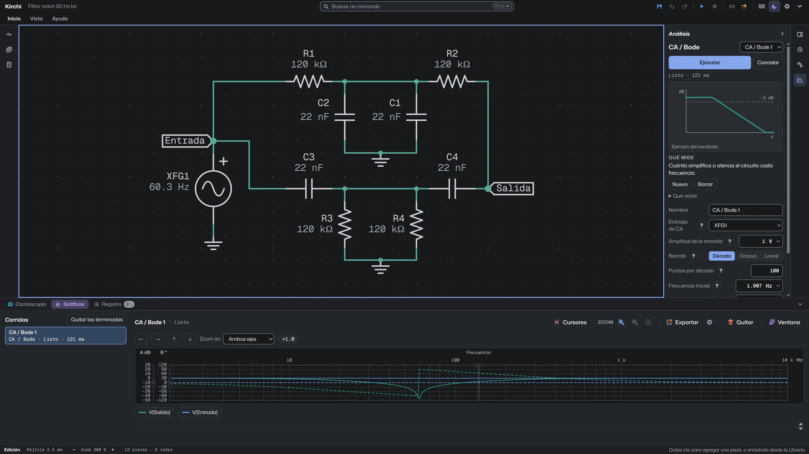
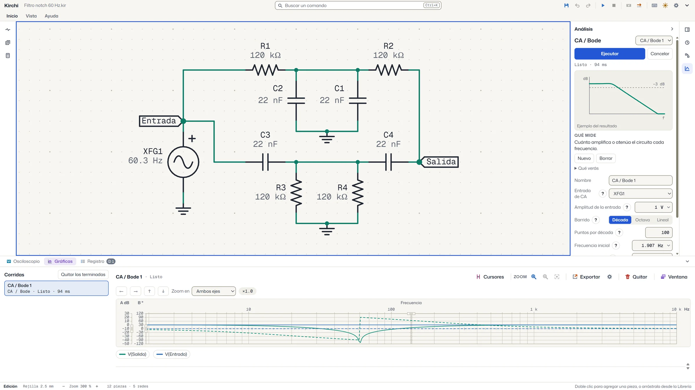
Punto de operación, barrido de CD, transitorio, CA y Bode, Fourier y barrido de parámetro. ngspice 47 viene incluido y corre como programa aparte. Las gráficas llevan cursores y rangos que se escriben.
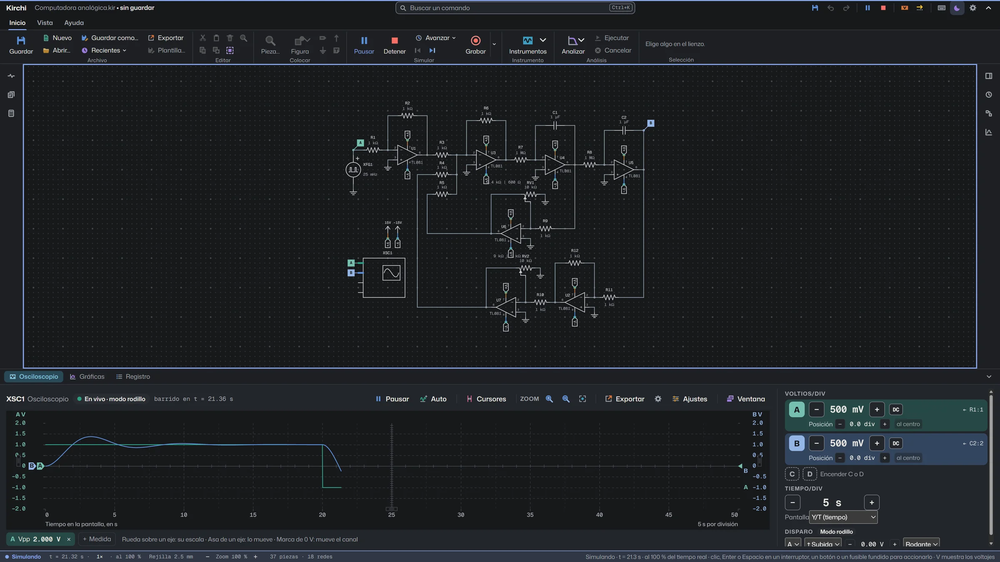
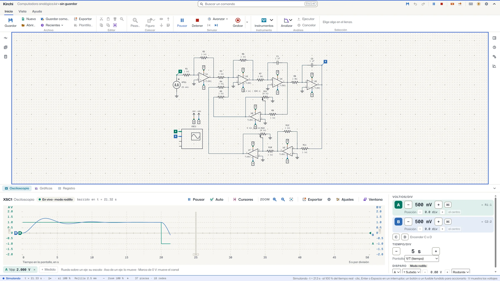
Una computadora analógica de 37 piezas y 18 redes simulándose al 100 % del tiempo real, con la respuesta en el osciloscopio.
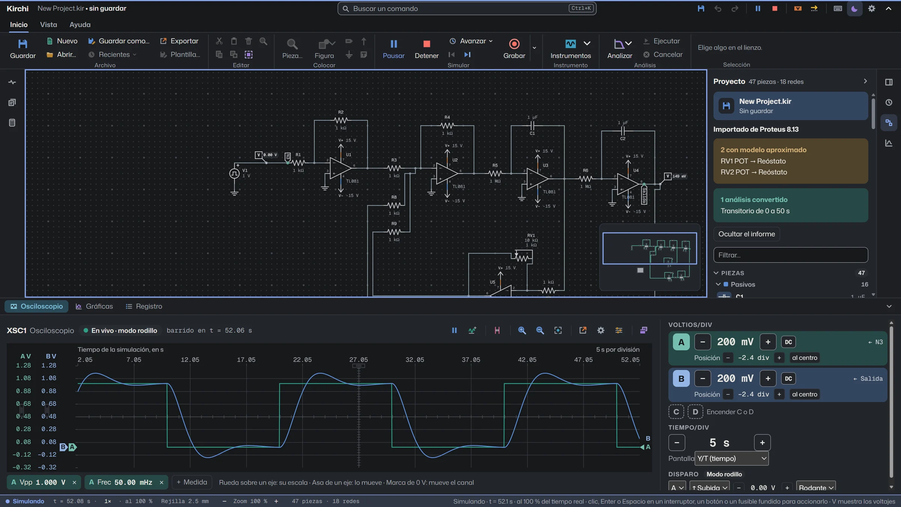
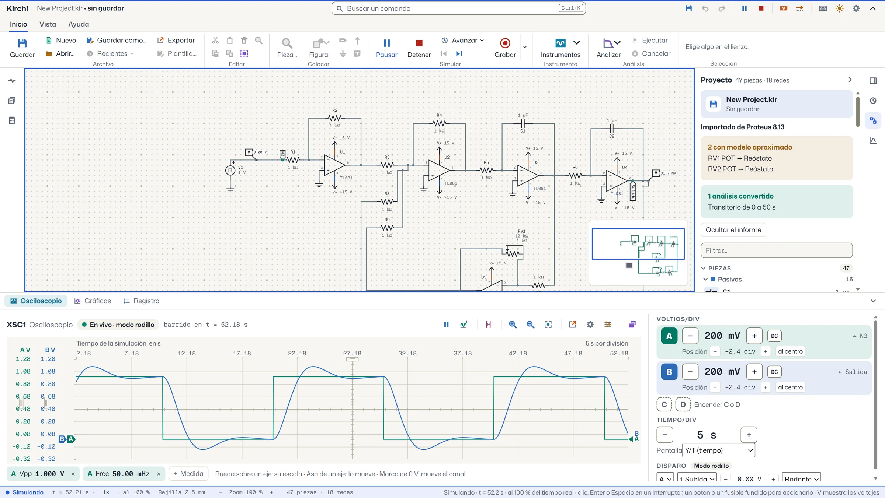
Un circuito de Proteus 8 abierto en Kirchi y simulado: con el osciloscopio lleno hasta los 50 s del análisis y el informe de importación en el panel Proyecto.
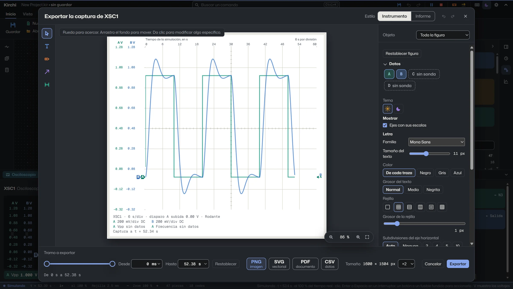
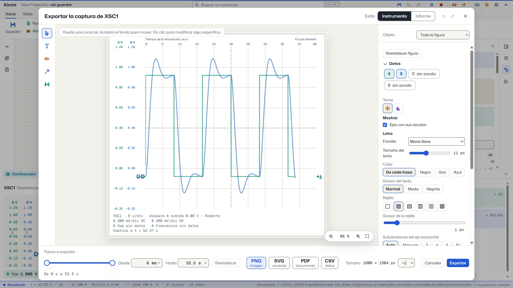
Exporta el esquema a PNG, SVG o PDF, y las gráficas con su estilo para el reporte. El editor de la figura cambia colores, letra, rejilla y anotaciones antes de exportar.
Capturas reales de Kirchi. Cambian solas cada 8 segundos y se detienen tras una vuelta. Se pausan con el botón, con el ratón encima o al usar el teclado.
Lo que incluye
- piezas
- 113
- plantillas
- 15
- calculadoras
- 6
- canales de osciloscopio
- 4
- capítulos de tutorial
- 5
113 piezas con modelo eléctrico
En nueve categorías: pasivos, fuentes, semiconductores, integrados, digitales, interruptores, indicadores, electromecánicos e instrumentos. Hay sensores, motores a pasos, JFET, IGBT, optoacopladores, fuentes controladas y lógica MSI. Cada pieza muestra en el inspector su encapsulado, sus pines, su huella y la hoja de datos de la que salen sus parámetros.
Plantillas y calculadoras
Quince plantillas listas para simular y seis calculadoras (divisor, LED, filtros, 555 astable y monoestable, amplificadores) que muestran la ecuación con tus valores y generan el circuito.
Tutorial dentro de la aplicación
«Aprende Kirchi» tiene cinco capítulos que se hacen por separado: Conoce Kirchi, Tu primer circuito, Medir, Analizar y exportar e Importar.
Para la entrega
Exporta esquemas y gráficas a PNG, SVG y PDF, con fondo blanco o tema oscuro y anotaciones que no ensucian el circuito. También graba la ventana en video MP4, con o sin micrófono.
Gratis y sin conexión
Gratis, sin cuenta, sin anuncios y sin funciones de pago. Todo ocurre en tu computadora y no se envía ningún dato. Un asistente de IA por el protocolo MCP es opcional y viene apagado.
Lo que todavía no hace
Kirchi simula circuitos de electrónica analógica y digital. No simula microcontroladores ni traza placas (PCB): prepara el proyecto y la placa se dibuja en KiCad.
Tampoco tiene todavía diagramas de bloques, y no hay fecha para ellos. Los archivos de Kirchi son .kir y se abren con doble clic.
Descargar Kirchi
Gratis y sin cuenta. Elige tu sistema.
Windows
Windows 10 y 11
La Microsoft Store instala y actualiza Kirchi sola. También hay un instalador y una versión portátil que se abre sin instalar.
El instalador no está firmado con un certificado de pago: SmartScreen avisa de un editor desconocido. Pulsa «Más información» y «Ejecutar de todos modos».
macOS
dmg universal
Arrastra Kirchi a Aplicaciones.
La aplicación no está firmada por Apple. La primera vez, clic derecho sobre Kirchi › Abrir. Si macOS no puede verificarla, abre Ajustes del Sistema › Privacidad y seguridad y pulsa «Abrir de todos modos». Si dice que está dañada, ejecuta xattr -cr /Applications/Kirchi.app en la Terminal.
Linux
AppImage y deb
La AppImage necesita permiso de ejecución: chmod +x Kirchi-*-Linux.AppImage. El paquete .deb es para Debian y Ubuntu.
Los enlaces llevan al archivo más reciente publicado en GitHub. Si no cargan, la página de versiones tiene todos los archivos.
Apoyo voluntario
Ayuda a que Kirchi siga avanzando
Kirchi es gratis y puedes usarlo completo sin pagar nada. Si te sirve, puedes aportar para que siga manteniéndose.
- Opcional
- No desbloquea nada
- Sin cuenta
Tu aportación paga tiempo para mantener Kirchi y hacer versiones nuevas, y servicios que pueda necesitar, como la nube a futuro.
Elige cómo aportar
Cada proveedor cobra sus propias comisiones y trata tus datos según sus condiciones. Kirchi no recibe ni guarda tus datos de pago.
Licencias y términos de uso
Kirchi es gratis y se usa con sus términos de uso: puedes compartir los instaladores oficiales sin cobrar, pero no venderlo ni distribuir copias modificadas. Las versiones hasta la 3.0.0 se publicaron con MIT y la 3.1.0 con Apache 2.0. Los componentes de terceros conservan sus licencias.
ngspice
Los análisis los resuelve ngspice 47, que Kirchi ejecuta como un programa aparte, en su propio proceso y sin enlazarlo. Se compila a partir del código oficial, sin cambios, y viaja con su licencia. ngspice combina varias: el simulador es BSD modificada, KLU y numparam son LGPL, OSDI es Mozilla Public License 2.0, sparse es de tipo MIT, XSPICE es de dominio público y el modelo de código «table» es GNU GPL 2 o posterior.
Esas licencias piden que quien recibe los binarios pueda obtener el código fuente. En cada Release se publica Kirchi-X.Y.Z-fuentes-de-terceros.zip, con el código de ngspice 47 y del crate faer (que incluye partes bajo MPL 2.0), junto con sus sumas SHA-256.
Electron y bibliotecas
La interfaz corre en Electron, que incluye Chromium. Los avisos de Electron y de Chromium, y las licencias de cada biblioteca de la interfaz y del motor, viajan con la aplicación y se muestran en «Acerca de».
Tipografías y animación de esta página
Mona Sans, Geist Mono y Source Serif 4, bajo la SIL Open Font License 1.1, las mismas que usa Kirchi. Avisos y textos: Mona Sans, Geist Mono y Source Serif 4. La animación del titular usa GSAP 3.15.0 con su licencia estándar.